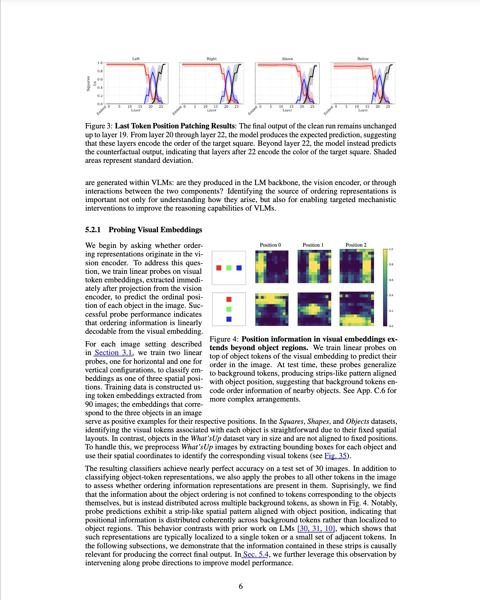 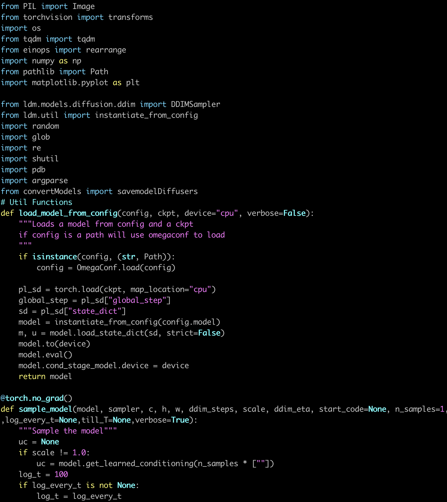
ArXiv
Preprint
Source
Code
Github
When you show an AI that can "see" (a vision–language model, or VLM) a photo and ask something like "what's the cup to the left of the laptop?", it has to work out which object is where. We looked inside these models to see how they actually do this—and why they sometimes get it wrong.
The short version: the model uses two systems at once.
And the fun part: once we understood this, we could give the "eyes" a small nudge and fix more than half of the model's spatial mistakes—with no retraining at all.
Here's the trick at the heart of everything. To keep track of which object is which, the model quietly tags each one with its position in line—think "1st, 2nd, 3rd" from left to right. It doesn't matter what the object is (a red square, an apple, a chair); what matters is where it sits. When you ask "what's to the left of X?", the model just looks up the right position tag and grabs that object's color or name.
This "numbering by position" trick was already known for text-only models. Our question was simpler and more basic: in a model that sees, who creates these position tags—the eyes or the brain? The answer turned out to be: both, but mostly the eyes.
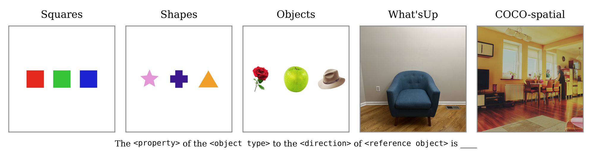
We started with toy pictures—three colored squares, shapes, or objects in a row—because they let us change exactly one thing and watch what the model does. Then we moved to real photos to make sure the findings hold in the messy real world. We ran everything on two popular open models, Qwen2-VL and Gemma-3, and they behaved the same way.
To see which part of the model is responsible for a behavior, we use a classic trick: swap a piece of the model's internal "scratchpad" from one image into another and see if the answer changes. If it does, that piece was doing the work.
First we checked that the position trick is real. We took two pictures with different colors and opposite questions ("left" vs. "right"), then copied a sliver of the model's internal state from one into the other. The result flipped to the object in the matching position—not the matching color—exactly what you'd expect if the model is tracking where things are, not what they are.
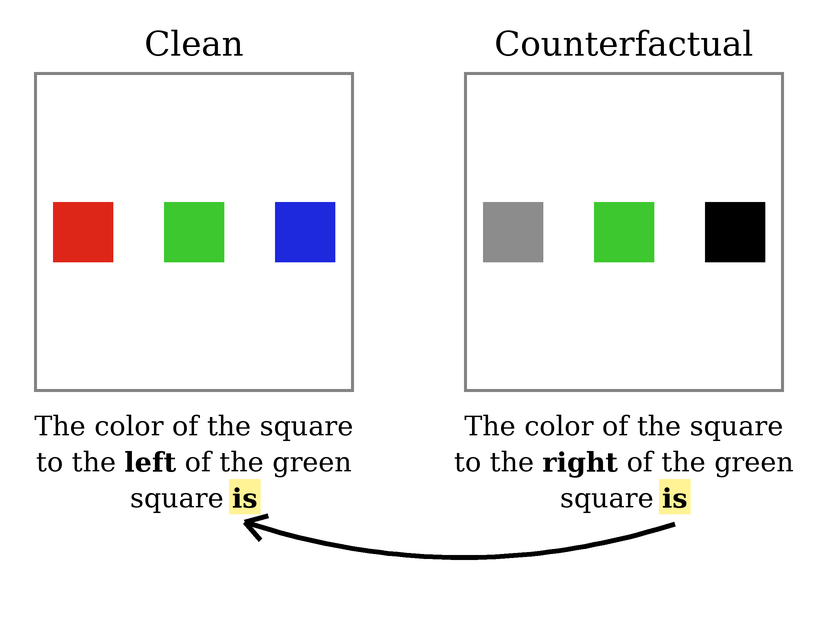
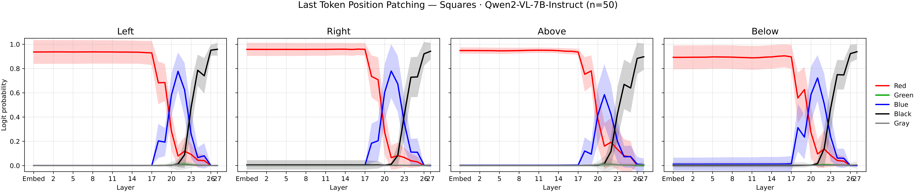
So where do the position tags come from? We trained a tiny detector to read an object's position straight out of the vision encoder—the part that turns the image into numbers—and it worked almost perfectly. The surprise: the position information isn't just sitting on the objects. It's smeared across the whole picture, including the blank background, in tidy vertical stripes lined up with each object.
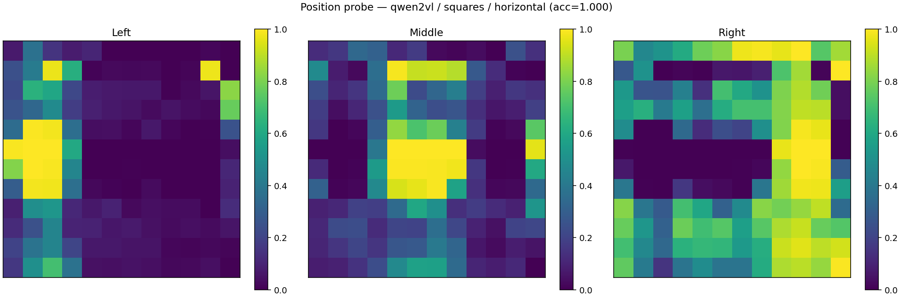
But being readable isn't the same as being used. So we ran the swap test again on the image side—trading the left and right regions between two pictures. The verdict:
In other words, that background signal isn't decorative—it's what the model actually relies on.
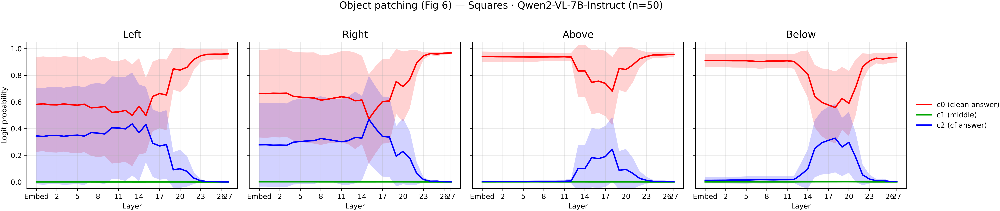
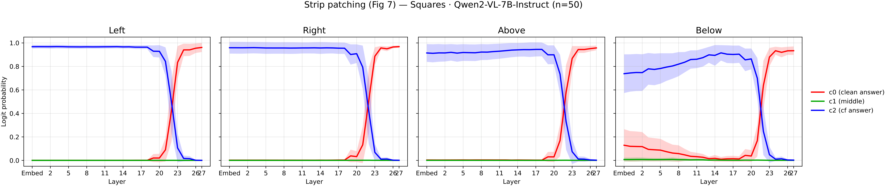
Does the language part do anything, then? To find out, we wiped the position information out of the image (keeping the colors, but scrambling where things are). The model got much worse—more proof the vision side matters most—but it still did better than random guessing. Something was picking up the slack.
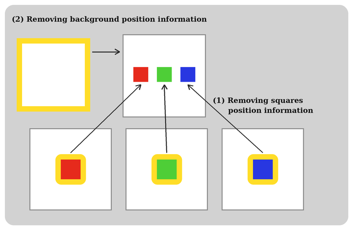
When we repeated the swap test in this stripped-down setting, the answer flipped again—this time thanks to the model's middle layers. So when the eyes can't supply the position tags, the language part quietly builds its own. It's a backup, not the star of the show.
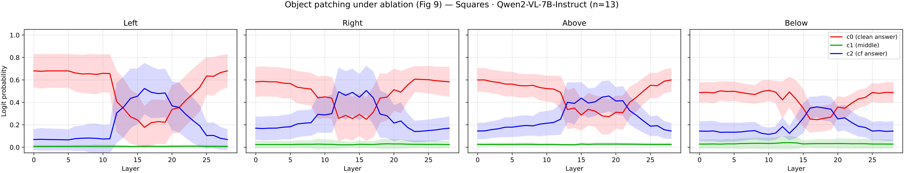
Here's the practical part. If position information is what matters, what happens if we simply turn up the volume on it? We gave the vision signal a gentle boost—applied blindly across the whole image, with no labels, no retraining, and no knowing which objects the question is about.
On real COCO photos, this one simple tweak fixed over half (up to 54.5%) of the model's wrong answers, lifting accuracy by about 20–30 points—while a "boost a random direction" baseline did almost nothing. Understanding the mechanism paid off directly.
| Intervention | Gemma Acc. | Gemma % Corr. | Qwen Acc. | Qwen % Corr. |
|---|---|---|---|---|
| None | 0.53 | – | 0.60 | – |
| Random amp. | 0.57 | 9.6% | 0.65 | 13.1% |
| Ordering amp. | 0.72 | 40.2% | 0.82 | 54.5% |
A few papers our work builds on:
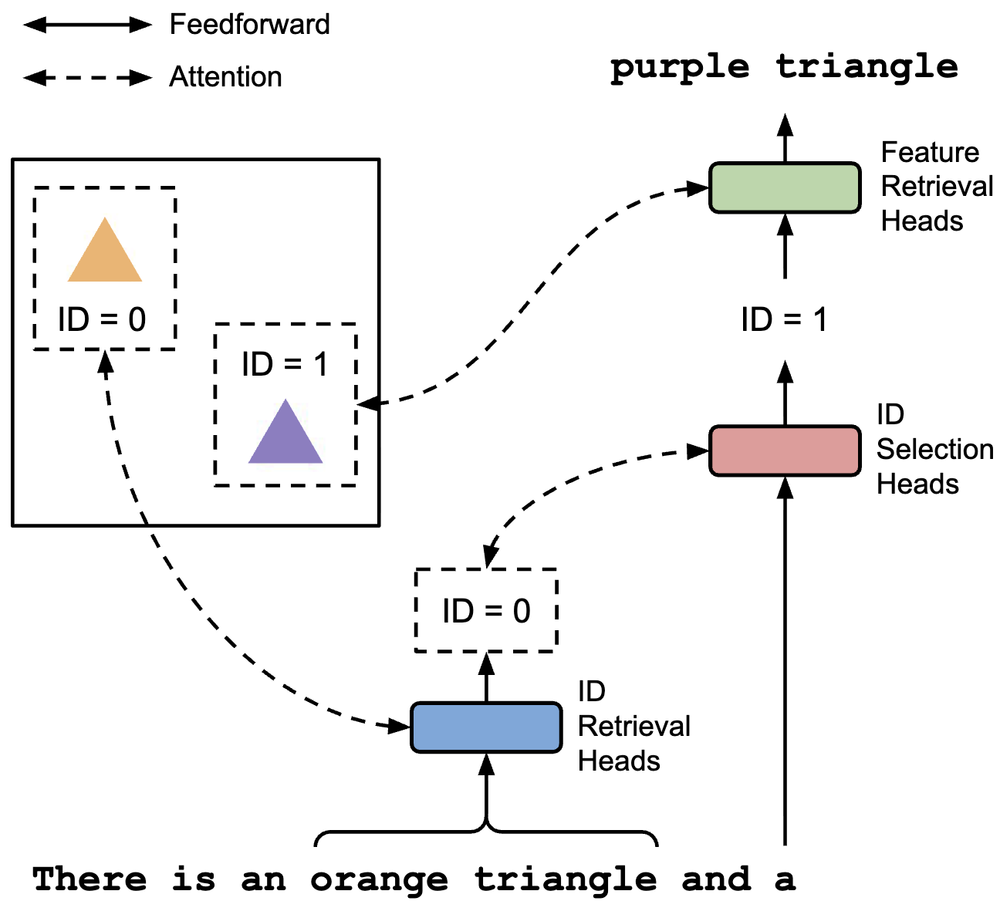
In short: Showed that vision models use position-style tags to keep objects straight. We pin down
where those tags come from—mostly the eyes.
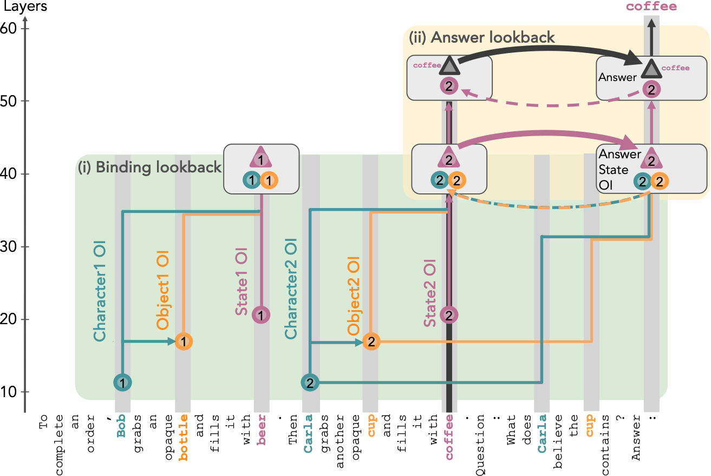
In short: Showed that text models track who-believes-what using the same "number things and look
them up later" trick. We carry that idea over to models that see.
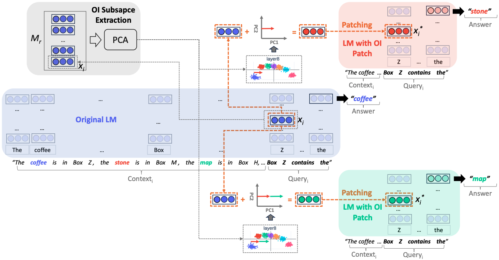
In short: Found the "position tag" idea inside text-only models. We show vision models do something
similar—but for them it's only the backup.
This work is available as a preprint. It can be cited as follows.
Kelly Cui, Nikhil Prakash, Shoval Messica, Ayush Raina, David Bau, Antonio Torralba, Tamar Rott Shaham.
"The Dual Mechanisms of Spatial Variable Binding in Vision–Language Models." arXiv preprint
arXiv:2603.22278 (2026).
@article{cui2026dual,
title={The Dual Mechanisms of Spatial Variable Binding in Vision--Language Models},
author={Cui, Kelly and Prakash, Nikhil and Messica, Shoval and Raina, Ayush and Bau, David and Torralba, Antonio and Shaham, Tamar Rott},
journal={arXiv preprint arXiv:2603.22278},
year={2026}
}